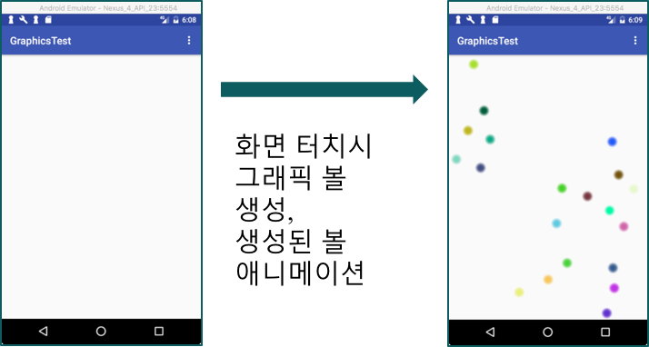
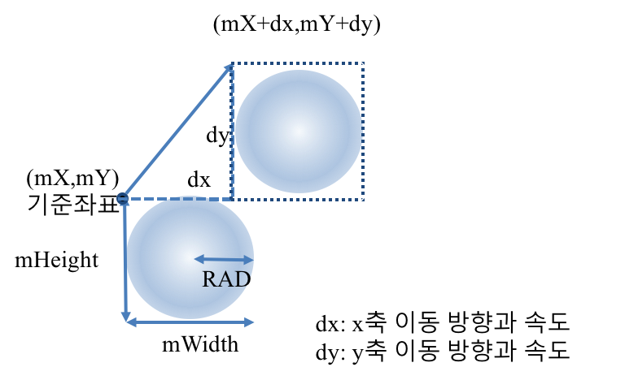
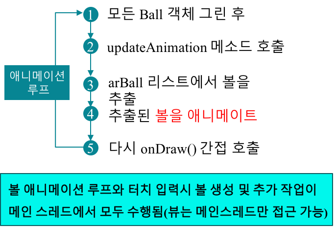
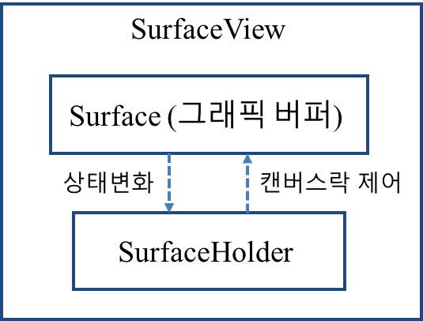

뷰(View)를 상속한 클래스 정의
public class CustomView extends View {
// Simple constructor to use when creating a view from code
public CustomView(Context context) {
super(context);
}
// Constructor that is called when inflating a view from XML
public CustomView(Context context, @Nullable AttributeSet attrs) {
super(context, attrs);
}
}페인트 객체 초기화 (색상, 선 스타일, 선 굵기 등 설정)
public class CustomView extends View {
private Paint paint;
public CustomView(Context context) {
super(context);
init();
}
public CustomView(Context context, @Nullable AttributeSet attrs)) {
super(context);
init();
}
// 페인트 객체 초기화
public void init() {
paint = new Paint();
paint.setColor(Color.RED);
}View.onDraw() 메소드 내에서 도형 그리기
public class CustomView extends View {
//...생략...
protected void onDraw(Canvas canvas) {
super.onDraw(canvas);
canvas.drawRect(100, 100, 200, 200, paint);
}
}새로 만든 뷰를 액티비티 레이아웃에 추가하기
<com.kwanwoo.android.graphicstest.CustomView
android:layout_width="wrap_content"
android:layout_height="wrap_content"
android:id="@+id/customView"
/>[주의] XML 레이아웃에 추가하기 위해서는 생성자 중에서 public CustomView(Context context, @Nullable AttributeSet attrs)가 반드시 재정의 되어야 함
BitmapFactory 클래스
| 클래스 메소드 | 설명 |
|---|---|
| public static Bitmap decodeFile(String pathName) | pathName 위치의 이미지 파일 읽기 |
| public static Bitmap decodeResource(Resources res, int id) | 리소스에 저장한 이미지 파일을 id를 통해 읽기 |
| public static Bitmap decodeByteArray(byte[] data, int offset, int length) | 바이트 배열로 되어 있는 비트맵 이미지를 읽기 |
비트맵 그리기 예제
protected void onDraw(Canvas canvas) {
super.onDraw(canvas);
//...
Bitmap bitmap= BitmapFactory.decodeResource( getResources(), R.drawable.ball );
canvas.drawBitmap(bitmap, 100,300,null);
}볼은 임의의 방향과 속도로 움직이다가 벽에 부딪히면 반사

Ball 클래스

public class Ball {
final int RAD = 24; // 볼의 반지름
int mX, mY; // 볼의 기준좌표
int mWidth, mHeight; // 볼의 넓이와 높이
int dx, dy; // 볼의 x축 혹은 y축 이동 방향, 이동 속도 값
int color;
public Ball(int x, int y) {
mX = x;
mY = y;
mWidth = mHeight = RAD * 2; // 원의 반지름 (RAD)의 2배가 Ball의 폭과 높이
Random Rnd = new Random();
do {
dx = Rnd.nextInt(11) - 5; // -5 ~ 5 중 난수로 x방향 속도 설정
dy = Rnd.nextInt(11) - 5; // -5 ~ 5 중 난수로 y방향 속도 설정
} while (dx == 0 || dy == 0); // 0은 제외
// 임의의 색상 설정
color = Color.rgb(Rnd.nextInt(256), Rnd.nextInt(256), Rnd.nextInt(256));
}
public void draw(Canvas canvas) {
Paint paint = new Paint();
// 바깥쪽은 흐릿하게 안쪽은 진하게 그려지는 원
for (int r = RAD, alpha = 1; r > 4; r--, alpha += 5) {
paint.setColor(Color.argb(alpha,
Color.red(color),
Color.green(color),
Color.blue(color)));
canvas.drawCircle(mX + RAD, mY + RAD, r, paint);
}
}
void move(int width, int height) {
mX += dx; // x 좌표값을 dx 만큼 증가
mY += dy; // y 좌표값을 dy 만큼 증가
if (mX < 0 || mX > width - mWidth) { // 화면 좌우 경계에 닿은 경우
dx *= -1; // 좌우 방향 반전
}
if (mY < 0 || mY > height - mHeight) { // 화면 상하 경계에 닿은 경우
dy *= -1; // 상하 방향 반전
}
}
}public class AnimatedView extends View {
private ArrayList<Ball> arBall = new ArrayList<Ball>();
...
protected void onDraw(Canvas canvas) {
super.onDraw(canvas);
for (int idx=0; idx<arBall.size(); idx++) {
Ball B = arBall.get(idx); // 4. arBall 리스트에서 볼을 추출
B.draw(canvas); // 5. 추출된 볼을 캔버스에 그림
}
}
public boolean onTouchEvent(MotionEvent event) {
// 1. View 터치 시
if (event.getAction() == MotionEvent.ACTION_DOWN) {
// 2. 터치 위치에 볼 생성하여 arBall 리스트에 추가
arBall.add(new Ball((int)event.getX(), (int)event.getY()));
invalidate(); // 3. onDraw() 간접 호출
return true;
}
return false;
}
}
public class AnimatedView extends View {
private ArrayList<Ball> arBall = new ArrayList<Ball>();
...
public void updateAnimation() {
for (int idx=0; idx<arBall.size(); idx++) {
Ball B = arBall.get(idx); // 3. arBall 리스트에서 볼을 추출
B.move(getWidth(),getHeight()); // 4. 추출된 볼을 애니메이트
}
invalidate(); // 5. 다시 onDraw() 간접 호출 (무한 반복)
}
protected void onDraw(Canvas canvas) {
super.onDraw(canvas);
// 1. arBall 리스트에 있는 모든 Ball 객체 그리기
for (int idx=0; idx<arBall.size(); idx++) {
Ball B = arBall.get(idx);
B.draw(canvas);
}
updateAnimation(); // 2. updateAnimation 메소드 호출
}SurfaceView는 복잡하고 빠른 그래픽이 필요한 화면에서 주로 사용됨

SurfaceView 사용 패턴
public class AnimatedSurfaceView extends SurfaceView
implements SurfaceHolder.Callback
// Constructor that is called when inflating a view from XML
public AnimatedSurfaceView(Context context, AttributeSet attrs) {
super(context, attrs);
}
// SurfaceHolder.Callback 인터페이스 구현
public void surfaceCreated(SurfaceHolder surfaceHolder) { /*...*/ }
public void surfaceChanged(SurfaceHolder surfaceHolder, int i, int i1, int i2) { /*...*/ }
public void surfaceDestroyed(SurfaceHolder surfaceHolder) { /*...*/ }
}public class AnimatedSurfaceView extends SurfaceView
implements SurfaceHolder.Callback
SurfaceHolder holder;
public AnimatedSurfaceView(Context context, AttributeSet attrs) {
super(context, attrs);
holder = getHolder(); // SurfaceHolder 객체 획득
holder.addCallback(this); // SurfaceHolder 객체에 SurfaceHolder.Callback 인터페이스 구현을 등록
//...
}
// ... private void draw() {
while (true) {
//1. 볼을 그릴 캔버스를 lockCanvas() 메소드를 통해 참조하고 캔버스에 락을 걸어 둠
Canvas canvas = holder.lockCanvas(null);
//2. 앞에서 얻은 캔버스에 모든 볼을 이동시키고 그림
canvas.drawColor(Color.WHITE); // cavas 지우기- 흰색으로 채우기
synchronized (holder) {
for (int idx=0; idx<arBall.size(); idx++) {
Ball B = arBall.get(idx);
B.move(getWidth(),getHeight());
B.draw(canvas);
}
}
// 3. 캔버스 객체에 락을 풀어줌
holder.unlockCanvasAndPost(canvas);
}
} public class AnimatedSurfaceView extends SurfaceView // SurfaceView 상속
implements SurfaceHolder.Callback {
private Thread thread;
//...
public AnimatedSurfaceView(Context context, AttributeSet attrs) {
//...
thread = new Thread() {
public void run() {
draw(); // 볼 애니메이션
}
};
}
public void surfaceCreated(SurfaceHolder surfaceHolder) {
thread.start();
}
public void surfaceChanged(SurfaceHolder surfaceHolder, int i, int i1, int i2) {}
public void surfaceDestroyed(SurfaceHolder surfaceHolder) {
try {
thread.join();
} catch (InterruptedException e) {}
}주의 메인 스레드와 별도의 스레드에서 볼 애니메이션을 수행
{kind=link}